A collection of flow-field visualizations spanning my research arc from high-speed aerospace aerodynamics to patient-specific cardiovascular hemodynamics and conjugate heat transfer, plus a set of peridynamics simulations I've run on the side out of personal interest in nonlocal continuum mechanics. Each figure notes the solver, key parameters, and method used to generate it.
High-fidelity, wall-resolved simulations of pulsatile blood flow, built around an immersed-boundary treatment of patient-derived vascular geometry. This work sits at the core of my dissertation and looks at how curvature, pulsation, and dissection geometry drive transition and turbulence breakdown in the aorta.
Direct comparison of in-vivo 4D-flow MRI and direct numerical simulation (DNS) velocity-magnitude fields in a patient with aortic dissection. The DNS inlet condition was reconstructed from the MRI data using radial basis function (RBF) interpolation, and the outlets were closed with three-element Windkessel (WK) boundary conditions to match physiological pressure and flow-split behavior. The two fields show close agreement in both peak velocity magnitude and jet trajectory through the true and false lumen.
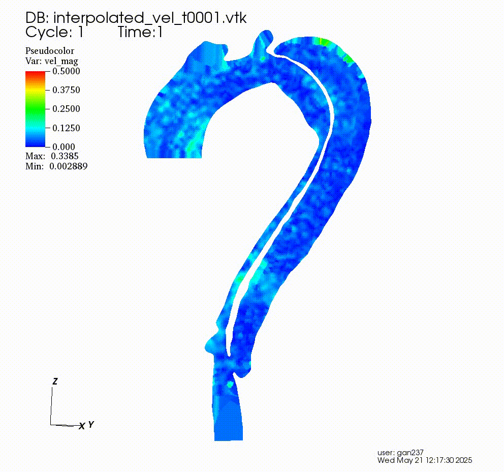
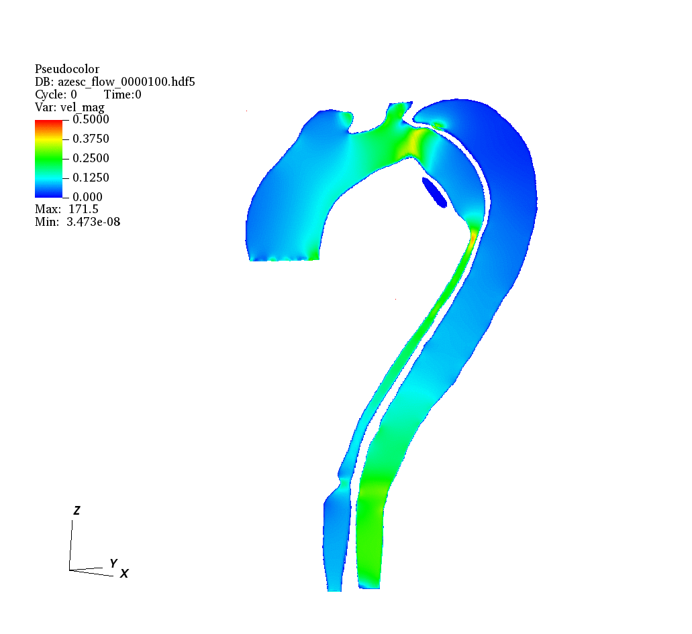
Three DNS cases in idealized curved-pipe analogs of the aortic arch, isolating the effect of pulsation amplitude and radius of curvature on Dean-vortex breakdown and the transition to turbulence. All three cases share a mean Reynolds number of 8,000; the differences below are purely geometric and waveform-driven.
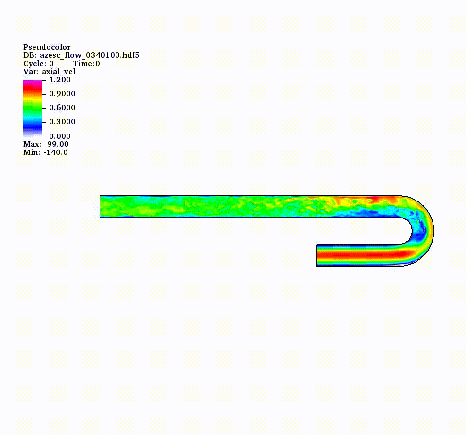
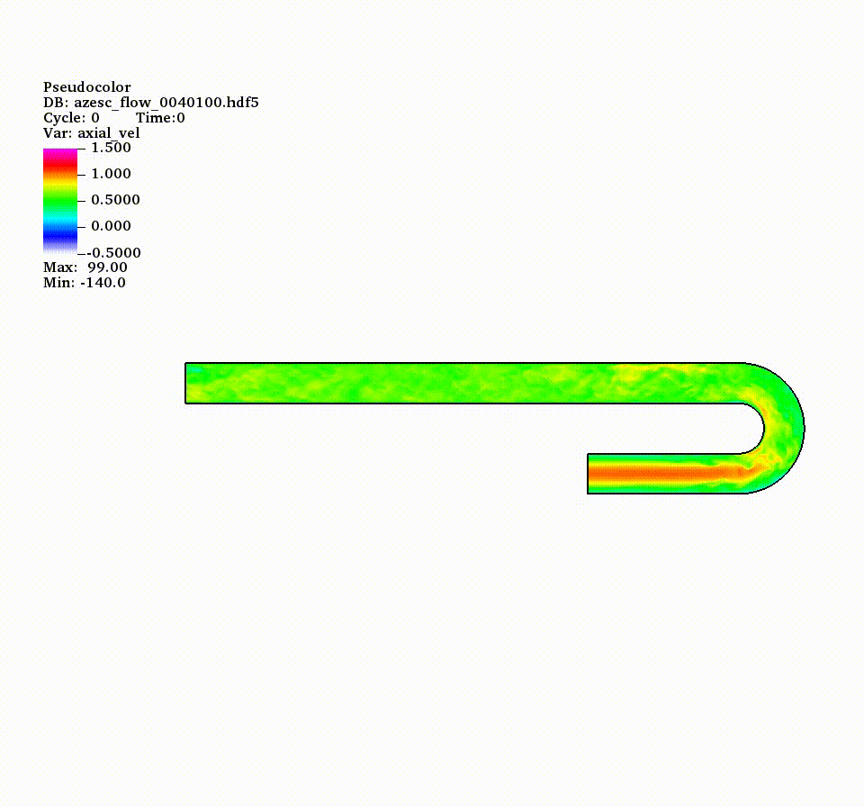
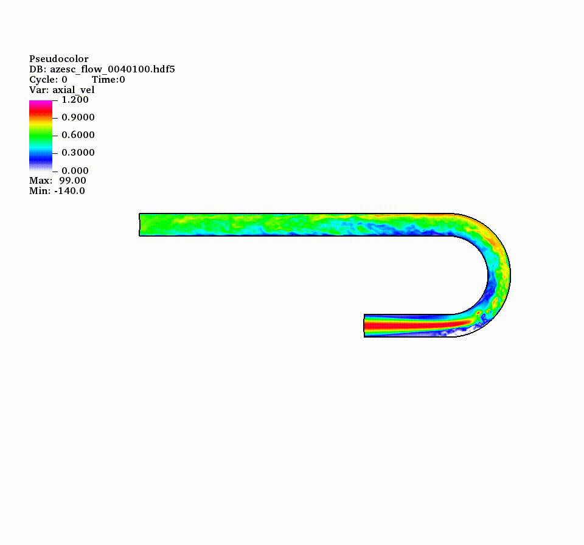
Work spanning my master's thesis at DLR, senior project fellowship at IIST, and doctoral research on fluid-structure interaction — from vortical wing aerodynamics to shock-laden nozzle flow and supersonic parachute deployment.
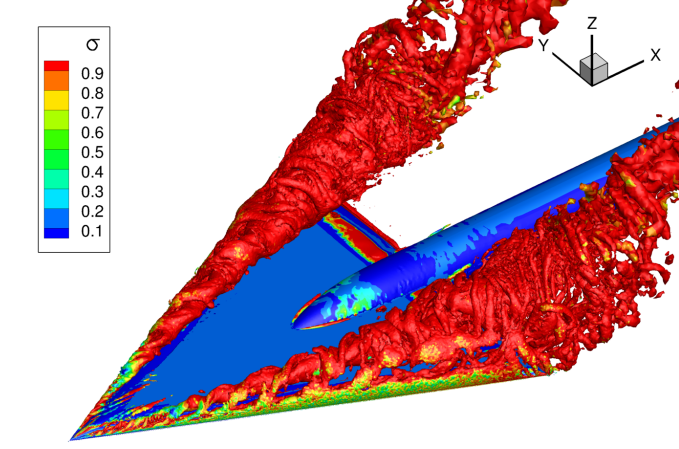
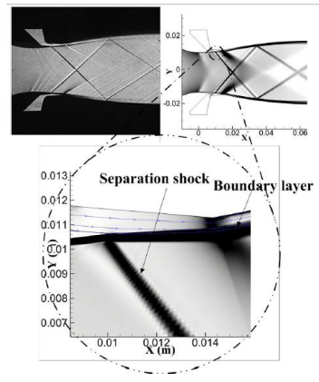
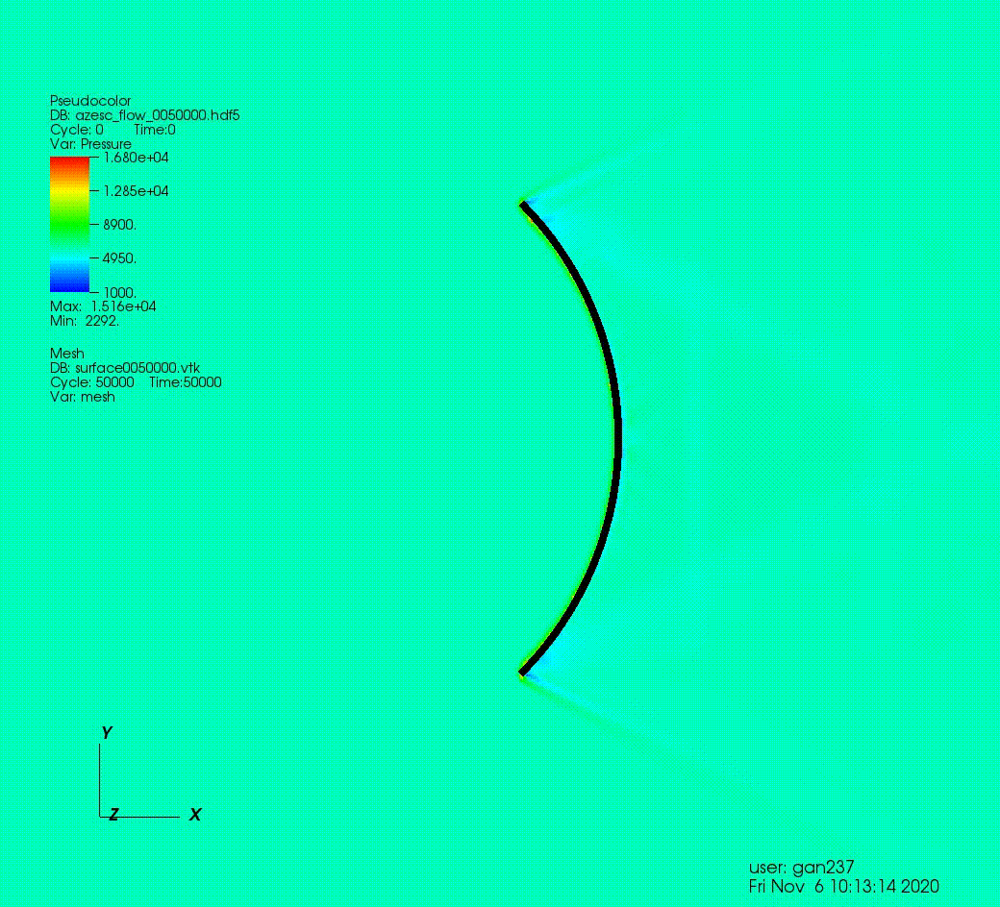
A conjugate heat transfer (CHT) study of automatic transmission fluid (ATF) jet impingement cooling on a heated cylindrical wire — a configuration representative of jet-cooled electric machine windings. Run in OpenFOAM to reproduce experimental heat-transfer-coefficient (HTC) trends published by NREL.
The domain couples a fluid region (ATF, Mercon LV) with a solid copper heater region across a
mappedWall interface that exchanges temperature and heat flux directly, so the wall
temperature is a solved outcome rather than a prescribed boundary condition. Steady-state cases
were run with chtMultiRegionSimpleFoam, OpenFOAM's segregated SIMPLE-algorithm
solver for multi-region conjugate heat transfer, coupling incompressible flow in the fluid
region to pure conduction in the solid region at every outer iteration; a handful of low-velocity
cases used the unsteady counterpart, chtMultiRegionFoam. Turbulence was modeled
with k-omega SST (blending k-ω near the wall with k-ε in the freestream, appropriate
for the Re = 121–2,414 range at the nozzle), switching to laminar for the lowest-velocity case.
Because ATF is a high-Prandtl fluid (Pr ≈ 107 at 70 °C), the thermal boundary layer is roughly
Pr1/3 ≈ 4.75× thinner than the momentum boundary layer, which demands a dedicated
high-Pr wall treatment — handled here with alphatJayatillekeWallFunction
(Prt = 0.85) on the fluid side and a fixedTemperatureConstraint
(fvOptions) on the solid side, alongside a near-wall mesh resolved to y⁺ ≈ 1.7 on
the coarse mesh. Predicted HTC matched experiment within ~10% at low jet velocity (0.5 m/s) for
both the baseline and 18 AWG wire geometries, with accuracy degrading at higher velocity —
traced to insufficient near-wall resolution for the high thermal-y⁺ requirement of Pr = 107 (a
target of y⁺ < 0.5, versus an actual thermal y⁺ ≈ 8.2), identifying near-wall mesh refinement
as the key next step.
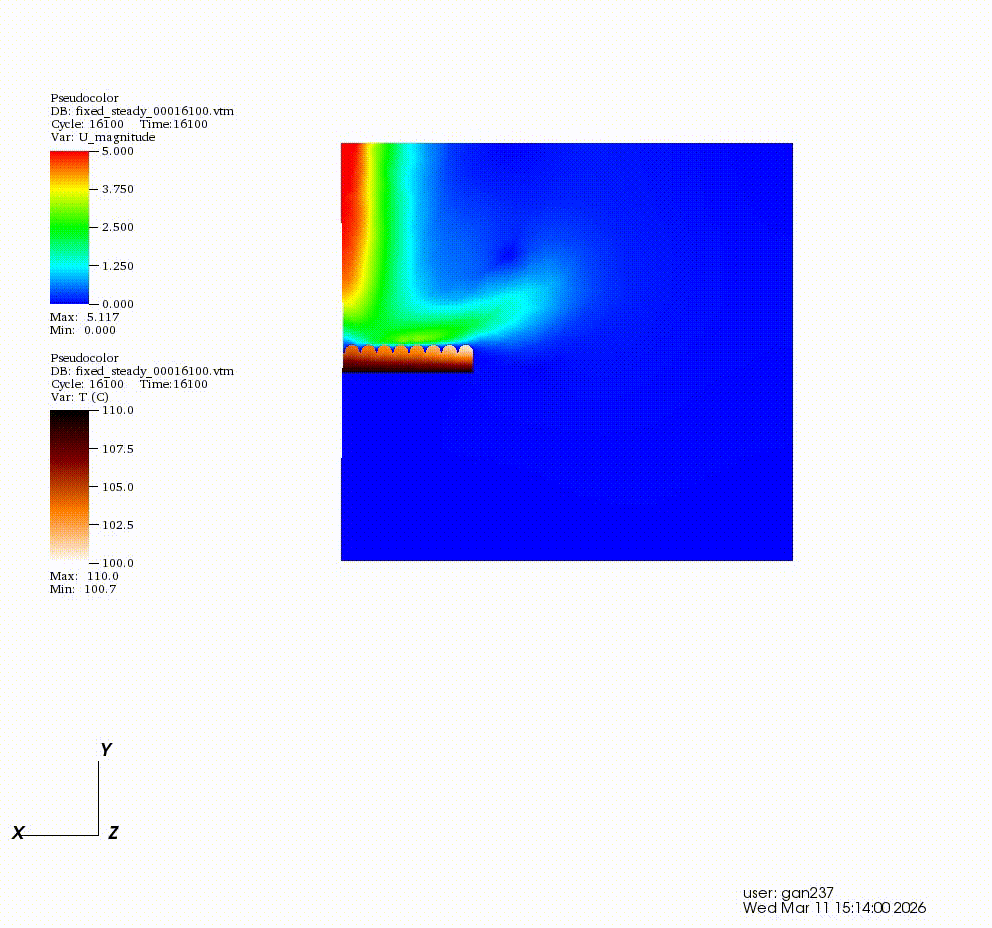
Outside my primary CFD research, I've worked through the standard tutorial problems in Peridigm, Sandia National Laboratories' open-source peridynamics code, to get hands-on with nonlocal fracture and damage modeling — a framework I find genuinely interesting as a complement to mesh-based FEA/CFD for problems involving fracture, fragmentation, and discontinuities.
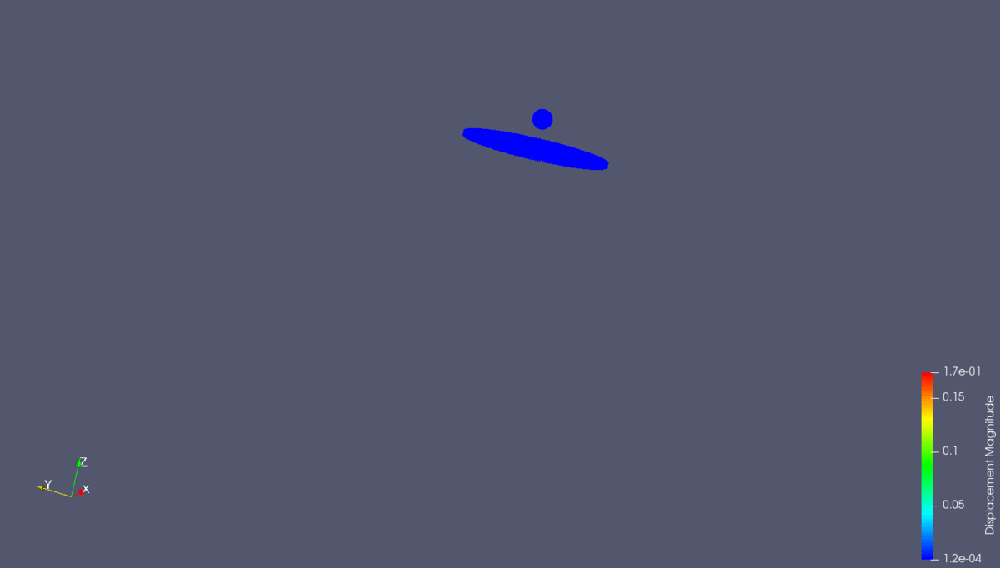
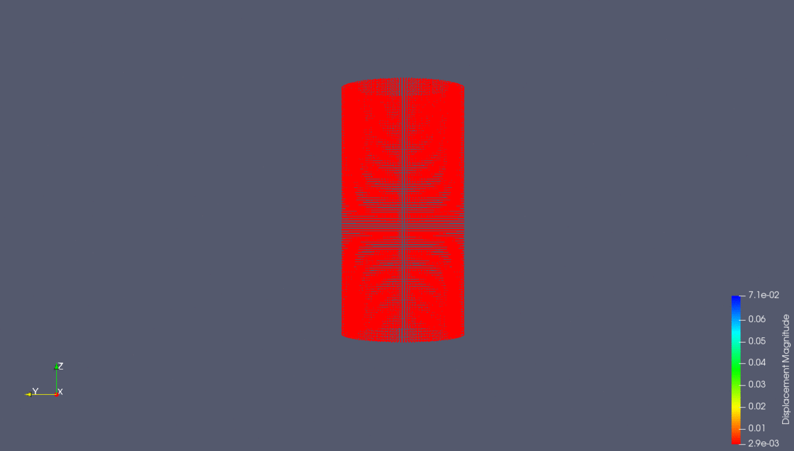
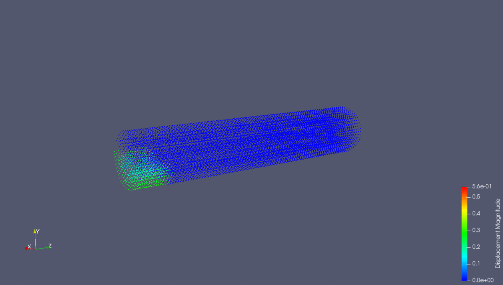
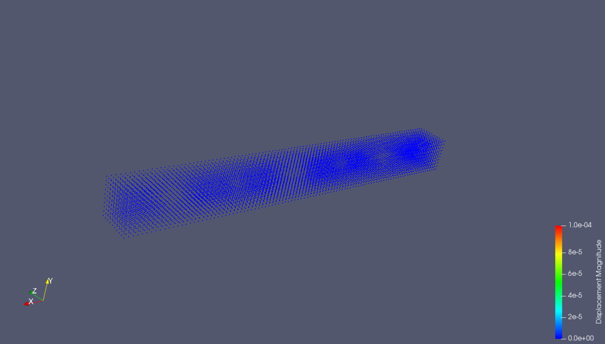
chtMultiRegionSimpleFoam / chtMultiRegionFoam conjugate heat transfer solvers. openfoam.com